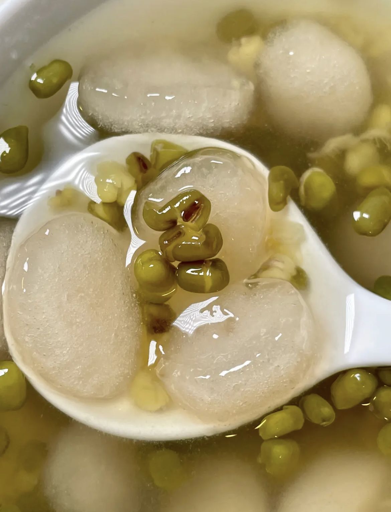
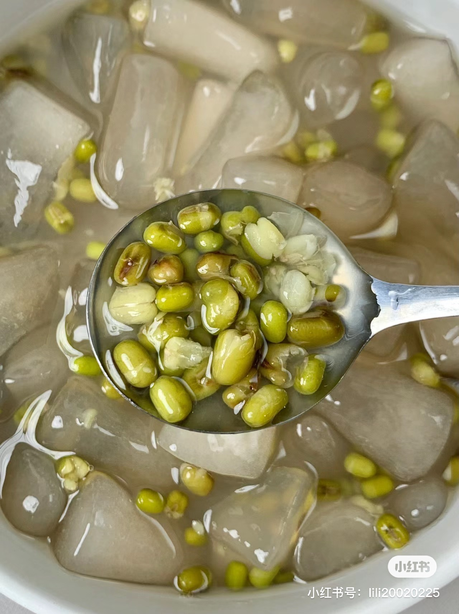
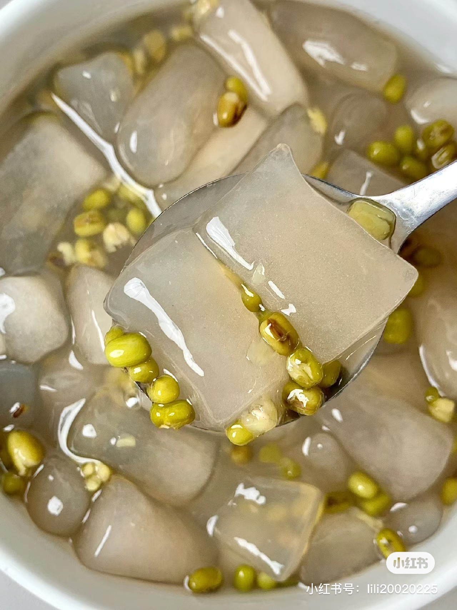
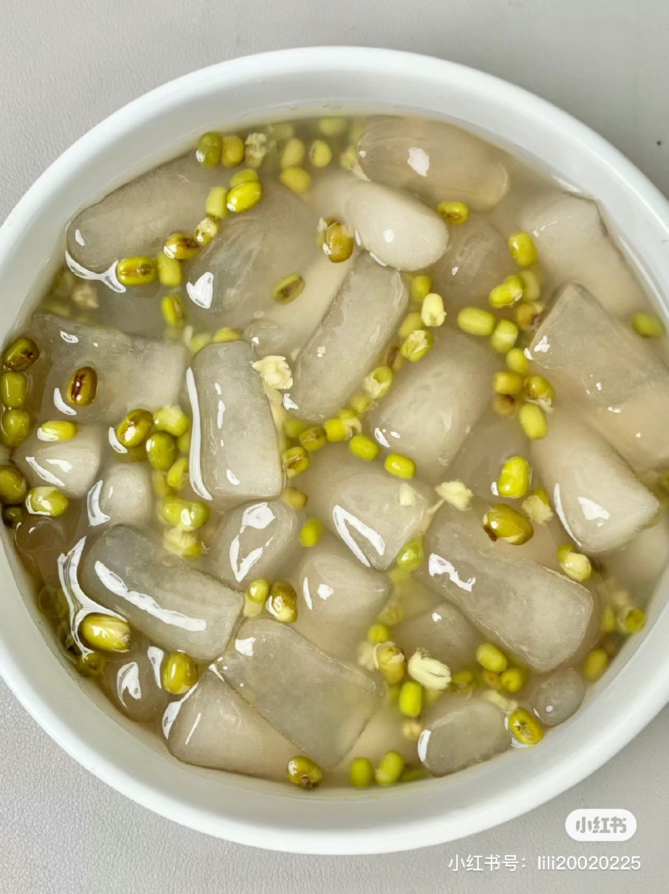
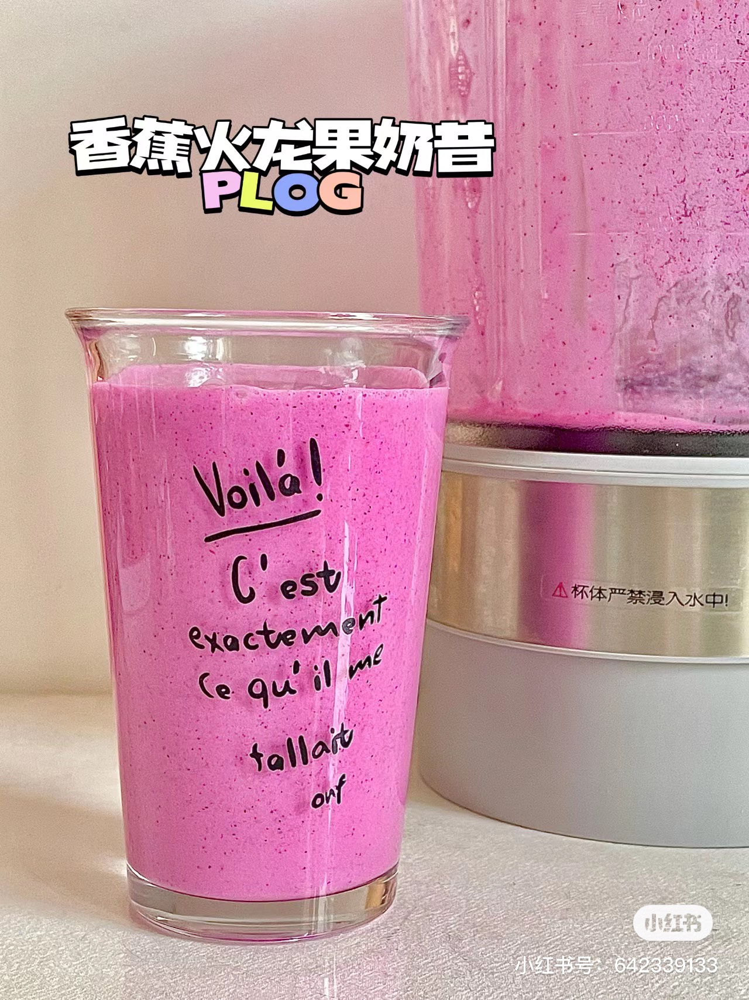

Double Chocolate Cookies
Origin: MichiganSource: Family Recipe
Category: Dessert

My daughter learned to make these cookies at a baking camp at Zingermanns and has tweaked the recipe to fit the taste buds of her siblings. They are extremely sugary so the salt helps to balance it. Note, these cookies are best eaten very quickly.
Recipe Ingredients
- Unsalted butter
- Granulated Sugar
- Packed light or dark brown sugar
- Large egg
- Pure vanilla extract
- Semi-sweet chocolate chunks (melted)
- All-purpose flour
- Natural unsweetened cocoa powder
- Baking soda
- Salt
- Semi-sweet chocolate chunks
Recipe Steps
- In a mixing bowl cream together the butter, granulated sugar, and brown sugar
- Add the egg and vanilla extract and beat well
- Add the melted chocolate
- In a separate bowl combine the flour, baking soda, cocoa powder and salt
- Combine the wet and dry ingredients
- Add the unmelted chocolate chunks.
- Form 15 cookies and place on a baking sheet.
- Cook for 12 to 13 minutes at 350 degrees.
Additional Food images


Ada
Origin: Minnan, Fujian, ChinaSource: “https://www.xiachufang.com/recipe/107131774/”
Category: Dessert

This is a family recipe for Ada, shared online, passed down from the author's grandmother. This dessert is particularly suitable for the summer season.
Recipe Ingredients
- Tapioca starch
- Mung beans
- Sugar
- Honey
Recipe Steps
- 100g Tapioca starch, 170g boiling water, stir with chopsticks until it forms a flaky texture
- After the temperature is no longer too hot to touch, knead it into a long strip, then cut it into small pieces. Sprinkle a little cassava starch to prevent sticking.
- Boil in hot water for about 6 minutes.
- Fish it out and rinse it several times in cold water until it turns translucent.
- Boil mung beans with 70g of sugar and water for about 25 minutes until cooked.
- Once the cooked Ada and mung beans are ready, mix them evenly with honey water
Additional Food images
  Ada
Origin:unkownSource: “http://xhslink.com/uyaTGu”
Category: Dessert

Meal replacement milkshake, the same as the one favored by a Chinese female celebrity.
Recipe Ingredients
- Bananas
- Dragon fruitListen
- Almond
- yogurt
Recipe Steps
- Prepare half dragon fruit
- Prepare a banana.
- Place all ingredients in a blender